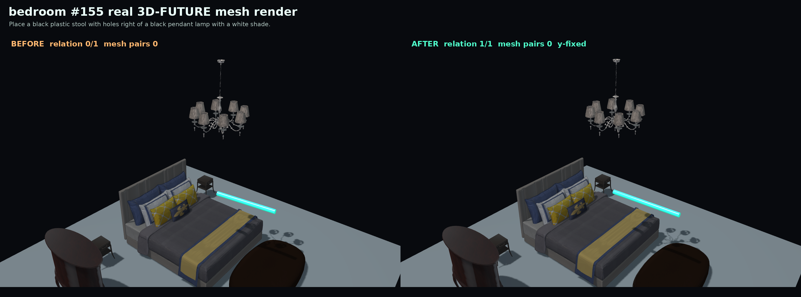
Place a black plastic stool with holes right of a black pendant lamp with a white shade.


Fifteen automatically selected before/after examples where floor-prior repair improves explicit spatial relations without increasing mesh collision pairs. These are real retrieved 3D-FUTURE meshes with material-aware rendering, not just boxes.

Place a black plastic stool with holes right of a black pendant lamp with a white shade.
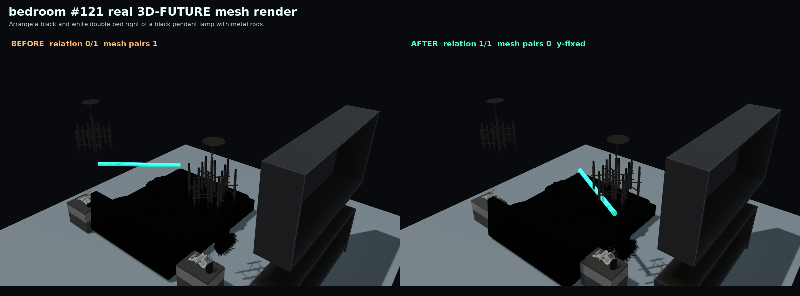
Arrange a black and white double bed right of a black pendant lamp with metal rods.


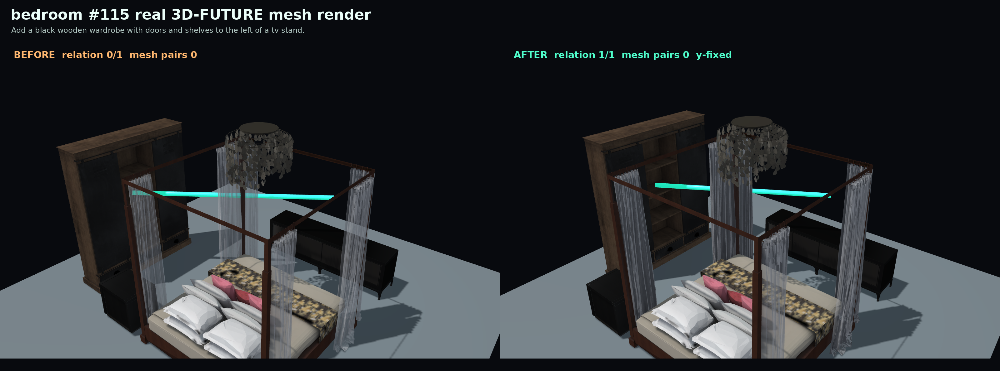
Add a black wooden wardrobe with doors and shelves to the left of a tv stand.


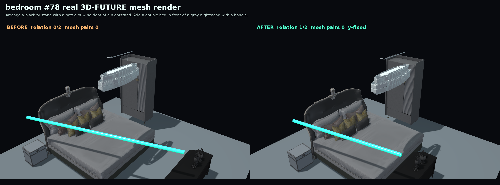
Arrange a black tv stand with a bottle of wine right of a nightstand. Add a double bed in front of a gray nightstand with a handle.


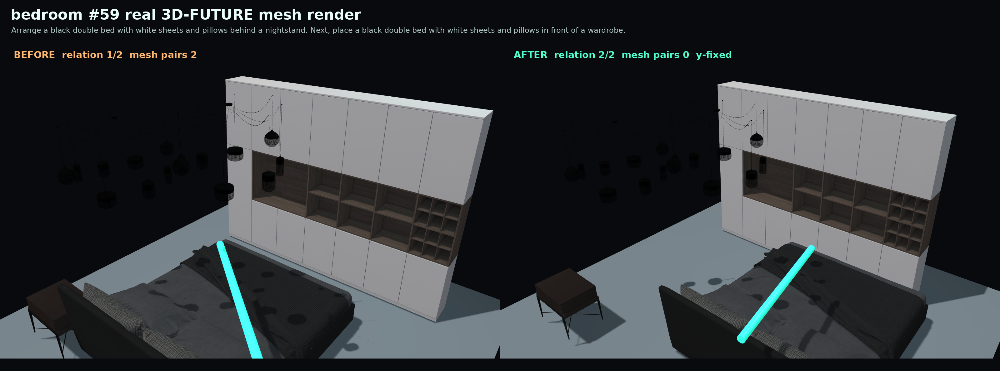
Arrange a black double bed with white sheets and pillows behind a nightstand. Next, place a black double bed with white sheets and pillows in front of a wardrobe.


Set up a silver flower coffee table runner behind a multi seat sofa. Add a silver pendant lamp with five lamps behind a patterned dining chair.


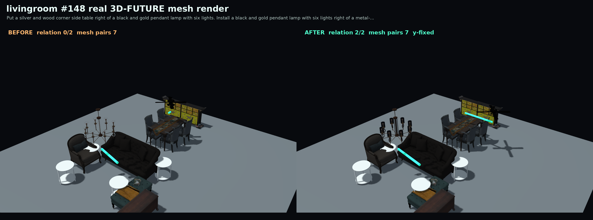
Put a silver and wood corner side table right of a black and gold pendant lamp with six lights. Install a black and gold pendant lamp with six lights right of a metal-based dining table with a wooden top.


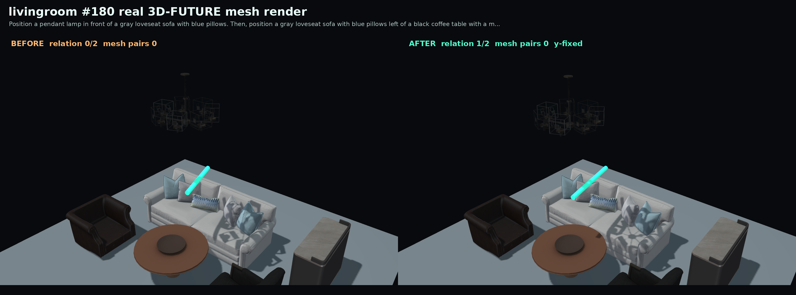
Position a pendant lamp in front of a gray loveseat sofa with blue pillows. Then, position a gray loveseat sofa with blue pillows left of a black coffee table with a metal frame.


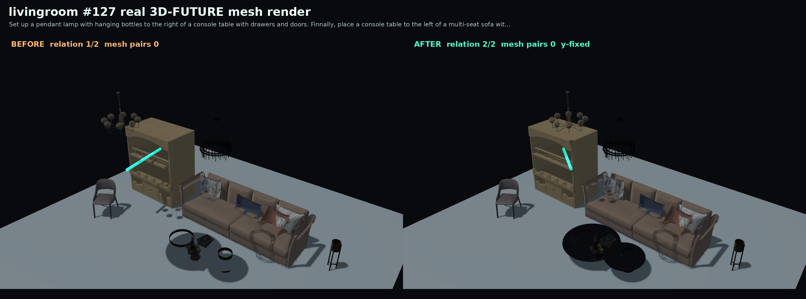
Set up a pendant lamp with hanging bottles to the right of a console table with drawers and doors. Finnally, place a console table to the left of a multi-seat sofa with pillows.


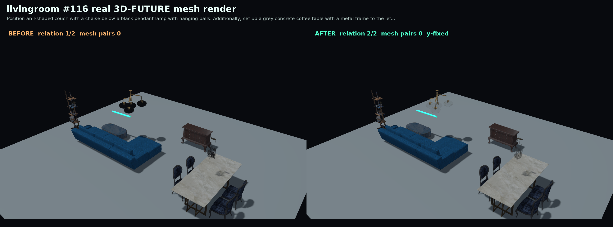
Position an l-shaped couch with a chaise below a black pendant lamp with hanging balls. Additionally, set up a grey concrete coffee table with a metal frame to the left of a pendant lamp.


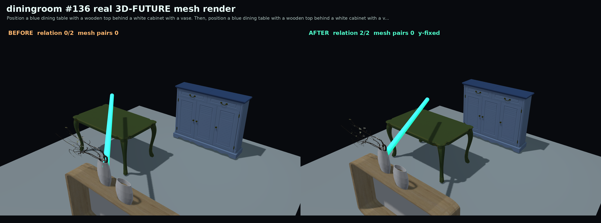
Position a blue dining table with a wooden top behind a white cabinet with a vase. Then, position a blue dining table with a wooden top behind a white cabinet with a vase.


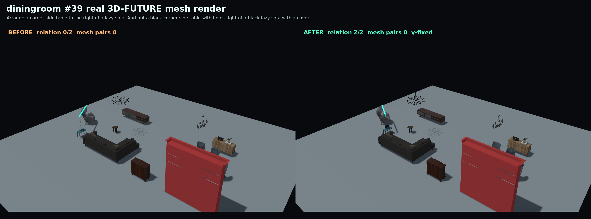
Arrange a corner side table to the right of a lazy sofa. And put a black corner side table with holes right of a black lazy sofa with a cover.


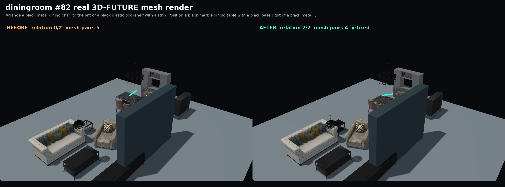
Arrange a black metal dining chair to the left of a black plastic bookshelf with a strip. Position a black marble dining table with a black base right of a black metal dining chair.


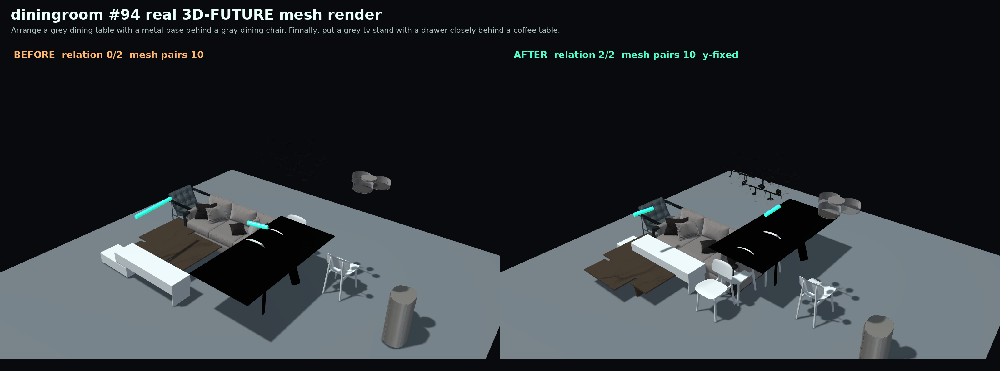
Arrange a grey dining table with a metal base behind a gray dining chair. Finnally, put a grey tv stand with a drawer closely behind a coffee table.


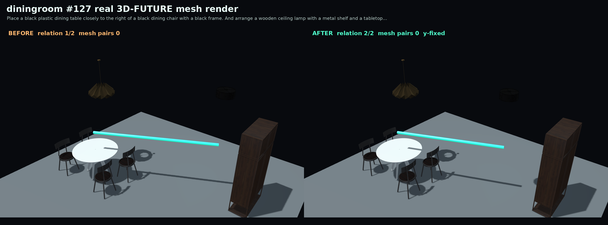
Place a black plastic dining table closely to the right of a black dining chair with a black frame. And arrange a wooden ceiling lamp with a metal shelf and a tabletop to the right of a dining table.